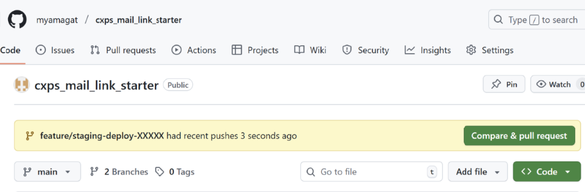

🚀 Firebase Hosting 運用ガイド（PR → Staging → 本番）
概要: GitHub でHTMLコンテンツを共同開発し、PR作成 → ステージング自動デプロイ → 確認 → マージ → 本番 の流れで安全に反映するための手順を、clone昇格にも対応した形でまとめます。
🧭 全体フロー
開発者ローカル GitHub / Actions Firebase Hosting
──────────────────── ─────────────────────────── ───────────────────────
1) 修正/動作確認 4) PR作成 6) 本番反映
2) stagingへ手動デプロイ → 5) Actionsがstagingへ自動反映 → (a) 通常: mainマージでprodへデプロイ
3) ブランチ作成/commit/push (b) clone昇格: staging:live → prod:live🛠 事前準備（確認）
.firebasercでstaging/productionターゲットが設定済みfirebase.jsonのhostingにtargetが定義済み（public/CSP等の設定共通）- GitHub Actions（例：
firebase-hosting-pull-request.yml/firebase-hosting-merge.yml）が配置済み - （任意）
promote-prod.ymlを用意して clone昇格 をボタン1つで実行できるようにする
① ステージングへデプロイ（ローカル確認）
firebase deploy --only hosting:stagingステージングURLで表示崩れ・リンク切れ・CSP違反などをチェックします。
② 作業ブランチを作成 → 変更をコミット/プッシュ
git checkout -b feature/staging-deploy-YYYYMMDD
# 変更を加える
git add .
git commit -m "Fix: top page content & staging check"
git push -u origin feature/staging-deploy-YYYYMMDD③ Pull Request（PR）を作成
- GitHubのリポジトリ画面で Compare & pull request をクリック
- タイトル／説明（変更点・確認観点・スクショ）を記載し、Create pull request
- Actions が自動で staging にデプロイ（PRコメントにURLが付く場合あり）

④ ステージングを最終確認
- ステージングURLは https://stg.docs.cxj-collab.com こちら
- ここで想定どおり表示されるか、リンク・画像・埋め込み（SharePoint等）を再確認
- チーム運用ならレビュー依頼（Reviewer 未指定でもPRは作成可能）
⑤ 本番反映（2通り）
A. 通常デプロイ（main へマージ）
- 全チェックが passed であることを確認
- Merge pull request → Confirm merge
- main への push をトリガに Actions が production へ自動デプロイ
B. clone昇格（staging と完全同一バイナリを prod に昇格）
Actions の Promote staging → production (clone) ワークフローを Run workflow。既定は <STAGING_SITE_ID>:live → <PRODUCTION_SITE_ID>:live をクローンします。
# 参考：手動コマンド（同一プロジェクト内）
firebase hosting:clone <STAGING_SITE_ID>:live <PRODUCTION_SITE_ID>:live --project <PROJECT_ID>メリット: 再ビルド不要・ステージングで確認したバージョンをそのまま本番へ。ロールバックも容易。
注意: site ID と target 名は別概念。
hosting:clone は site ID 指定です。.firebaserc の targets と取り違えないように。🔐 よくあるブロックと対処
| 現象 | 原因 | 対処 |
|---|---|---|
| 「At least 1 approving review is required」 | main にレビュー必須の保護ルール / Rulesets | Reviewer に Approve 依頼 / 管理者バイパス許可 / Environments 側へ承認ゲートを移す |
| 「Cannot change this locked branch」 | Branch protection + Rulesets によるロック | Rulesets を確認し、バイパス又は一時緩和。組織管理者へ依頼が必要な場合あり |
| staging にデプロイされない | PR用Actionsが無効 / permissions不足 / target未設定 | Actions有効化・Secrets設定・.firebaserc の targets を再確認 |
📌 付録：チェックリスト
- PRタイトルは「内容＋日付」で統一（例：
Update: jumbo-frame article (2025-10-23)） - Merge 後は不要になった feature ブランチを Delete branch
- SharePoint 埋め込み時は CSP の
frame-ancestorsを維持
結論: PR → staging 自動デプロイ → 目視OK → マージ（または clone昇格）→ 本番 の型に揃えると、再現性が高く安全に運用できます。clone昇格を用意しておけば、「staging と完全同一で出す」要件にも即対応できます。